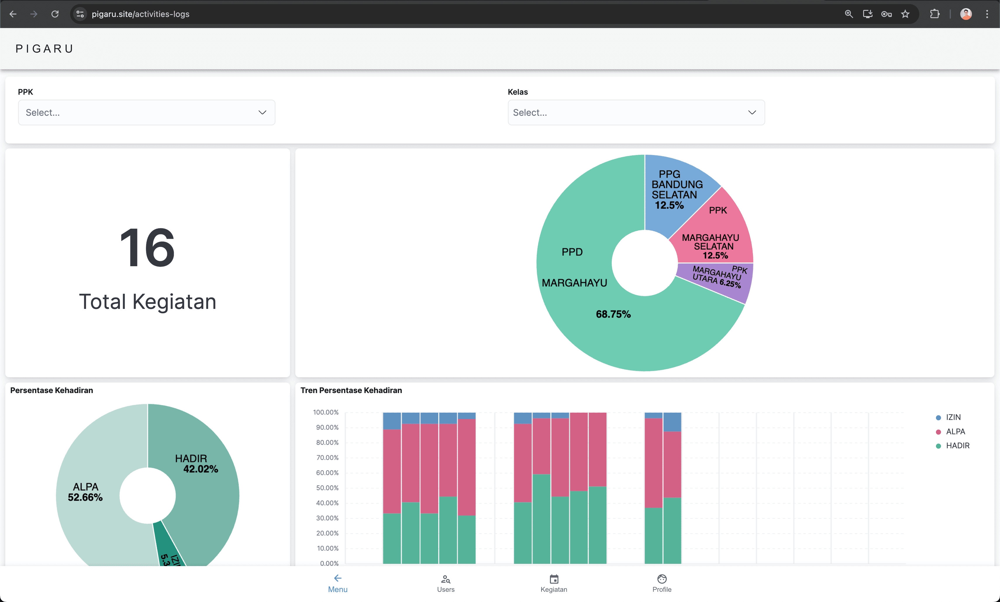

Pigaru App
My personal project, developed a Student Information System (SIS) that enables educators to manage and track student progress more efficiently.
- Reduced report-generation time from one month to seconds, accelerating academic workflows and decision-making.
- Automated administrative tasks, freeing educators to focus on outcomes.
- Designed a fullstack architecture using React, Node.js, PostgreSQL, Redis, Elasticsearch, Kibana, NginX, and Cloudflare.